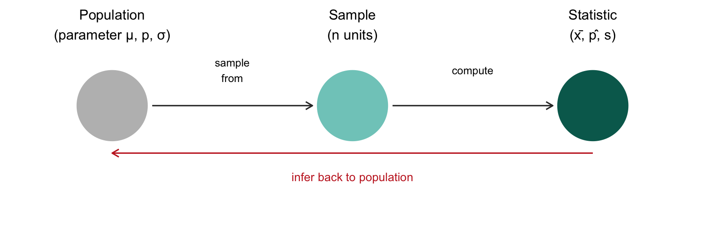

Chapter 1: Introduction
STA258: Statistics with Applied Probability University of Toronto Mississauga

The Big Question
How can we say something true about
millions of people we’ve never met?
Pollsters call ~1,000 Canadians and predict an election for 40 million.
Doctors test a drug on 500 patients and recommend it for everyone.
Netflix watches a sample of users and decides what shows to make.
That gap between “what we measured” and “what we want to know” — that’s what this whole course is about.
Roadmap
1.1 Foundations
- Statistics, population, sample
- Unit, observation, variable
- Parameter vs statistic
- Descriptive vs inferential
1.2 Types of Data
- Quantitative vs qualitative
- Discrete vs continuous
- Nominal vs ordinal
1.3 Inference Preview
- Sampling, bias, study types
1.1 Foundations
Definition 1.1 — Statistics
The science of collecting, classifying, summarizing, analyzing, and interpreting data.
Think of statistics as a pipeline:
Question → Data → Analysis → Decision
Population
Definition 1.2 — Population
The entire group of individuals, items, or measurements that share a characteristic of interest and about which conclusions are to be drawn.
Examples:
- All students at the University of Toronto
- All residents of Mississauga
- Every possible hand in a game of poker (hypothetical!)
- Every battery a factory will ever produce
A population can be real or hypothetical, finite or essentially infinite. What matters is that it’s the group you actually want to learn about.
Sample
Definition 1.3 — Sample
A subset selected from the population.
Examples:
- 50 randomly selected U of T students
- 100 randomly selected Mississauga residents
- 30 batteries pulled off the production line today
Why sample? Measuring everyone is usually too slow, too expensive, or simply impossible.
Visualizing Population vs Sample
Hover over any dot to see which unit it is. Grey = population, teal = the sample.
Your Turn: Identify Them
A researcher wants to know the average sleep of all UTM students. She randomly surveys 200 UTM students and finds they sleep 6.8 hours on average.
What is the population? What is the sample?
Population: All UTM students.
Sample: The 200 surveyed UTM students.
Unit, Observation, Variable
Unit — the smallest entity from which data are collected (one row).
Observation — the full set of measured values for one unit.
Variable — a characteristic that varies from unit to unit (one column).
Reading a Data Table
| Student | Age | Program | Study Hours | On Campus |
|---|---|---|---|---|
| 1 | 19 | Statistics | 20 | Yes |
| 2 | 22 | Computer Science | 15 | No |
| 3 | 20 | Biology | 28 | Yes |
| 4 | 21 | Psychology | 18 | No |
- Each row is one observation (one student)
- Each column is one variable
- The unit is a single student
Try It in R
Run it. Then change a value or add another student.
Population Unit vs Sample Unit
Population unit
One member of the entire population.
One U of T student, when the population is all U of T students.
Sample unit
One member of the selected sample.
One of the 50 students you actually surveyed.
Every sample unit is also a population unit — but not the other way around.
Parameter vs Statistic
Parameter
A number that describes the population.
Usually unknown.
Statistic
A number that describes the sample.
Calculated from data — known.
Memory trick: Parameter ↔︎ Population | Statistic ↔︎ Sample (both start with the same letter).
Notation You Need to Memorize
| Quantity | Population (parameter) | Sample (statistic) |
|---|---|---|
| Mean | \(\mu\) | \(\bar{x}\) |
| Standard deviation | \(\sigma\) | \(s\) |
| Proportion | \(p\) | \(\hat{p}\) |
| Size | \(N\) | \(n\) |
Greek letters → population. Roman letters (or hats) → sample.
Quick Check
For each, decide: parameter or statistic?
- The average height of all NBA players.
- 63% of 500 surveyed Canadians support a policy.
- The sample mean GPA of 80 UTM students is 3.12.
- The standard deviation of grades for every student who has ever taken STA258.
1 — parameter (all NBA players)
2 — statistic (500 surveyed)
3 — statistic (80 students)
4 — parameter (every student ever)
Compute a Statistic Yourself
Below are weekly study hours for a sample of 10 students.
Calculate the sample mean.
Descriptive vs Inferential Statistics
Descriptive statistics
Numerical and graphical methods used to summarize the data you have.
Inferential statistics
Using a sample to generalize to a larger population.
Spot the Difference
Descriptive
“The average mark in this lecture of 80 students is 72%.”
“63% of these 400 Torontonians support the plan.”
Inferential
“We estimate the average STA258 mark across all sections is around 72%.”
“We estimate ~63% of all Toronto residents support the plan.”
Tell: descriptive describes this data. Inferential makes a claim beyond the data.
1.2 Types of Data
Quantitative data
Numerical measurements where arithmetic is meaningful.
Qualitative (categorical) data
Values fall into categories; arithmetic doesn’t make sense.
Trap: a number doesn’t automatically mean quantitative.
Postal codes, jersey numbers, and student IDs look numeric but are categorical.
Quantitative: Discrete vs Continuous
Discrete
Countable values, often whole numbers.
- Number of siblings
- Courses enrolled in
- Defective items in a batch
Continuous
Any value in a range; measured on a scale.
- Height
- Time spent studying
- Temperature
Qualitative: Nominal vs Ordinal
Nominal
Categories with no natural order.
- Eye colour
- Program of study
- Primary device (phone/laptop/tablet)
Ordinal
Categories with a natural order.
- Self-rated health (Poor → Excellent)
- Movie rating (1–5 stars)
- Education level
The Full Map
DATA
|
+-------------+-------------+
| |
Quantitative Qualitative
(numeric) (categorical)
| |
+-----+------+ +-----+------+
| | | |
Discrete Continuous Nominal Ordinal
(counts) (measured) (no order) (ordered)This tree is the single most useful diagram in Chapter 1.
Classify These
Try classifying each one. Then click for the answer.
| Variable | Type |
|---|---|
| Number of pets a student owns | Quantitative, discrete |
| Language spoken at home | Qualitative, nominal |
| Backpack weight (kg) | Quantitative, continuous |
| Postal code | Qualitative, nominal |
| Classroom temperature (°C) | Quantitative, continuous |
| Self-rated health (Poor/Fair/Good) | Qualitative, ordinal |
Check Data Types in R
R can tell you what type each variable is. Run it, then change a value.
1.3 Introduction to Inferential Statistics
Sample → Statistic → Estimate of Parameter

Why Uncertainty Is Built In
Two different samples of 100 UTM students will give two different sample means.
So any estimate must come with a measure of how much it might be off.
This is where the tools in later chapters come from:
- Confidence intervals — a range of plausible parameter values
- Hypothesis tests — checking whether data support a specific claim
- Statistical power — how likely we are to detect a real effect
See Sampling Variability
Run it 5 times. Notice the sample mean changes each time — even though the true population mean is exactly 70.
A Closer Look at Sampling
How you collect your sample determines whether inference is honest.
Simple random sample (SRS) — every unit has an equal chance of being chosen.
Systematic — every \(k\)-th unit from an ordered list (e.g., every 50th student).
Stratified — divide into groups, sample from each group.
Cluster — randomly pick whole groups, survey everyone inside.
Convenience / Voluntary response — whoever is easy to reach or chooses to respond. ⚠ Usually biased.
Bias: When Samples Lie
Bias — a systematic tendency for a sample to differ from the population in a particular direction.
Classic bias traps:
- Selection bias — surveying gym-goers about exercise habits
- Voluntary response — Instagram polls (only loud opinions answer)
- Non-response bias — the people who skip the survey are different from those who answer
- Coverage bias — your sampling frame misses parts of the population
Observational vs Experimental Studies
Observational
Record what’s already happening — no intervention.
Survey adults: do you take vitamins? Did you catch a cold?
Experimental
Randomly assign participants to treatments, then compare.
Randomly give half the volunteers Vitamin C, half a placebo, and compare cold rates.
Only well-designed experiments can establish cause and effect.
Chapter 1 Summary
- Statistics = science of learning from data under uncertainty.
- We study a sample to learn about a population.
- Parameters describe populations (unknown); statistics describe samples (known).
- Data are quantitative (discrete/continuous) or qualitative (nominal/ordinal).
- Inference uses a sample statistic to estimate an unknown population parameter — with a measure of uncertainty.
- How we sample (and whether we experiment) determines whether inference is trustworthy.
What’s Next
Chapter 2: we move into R — the tool we’ll use to compute statistics, simulate samples, and visualize uncertainty.
End of Chapter 1
← Back to Chapter 1
Bonus Practice
Below are some ages of UTM students in a sample. Compute:
- The sample size \(n\)
- The sample mean \(\bar{x}\)
- The sample standard deviation \(s\)
STA258 | Chapter 1